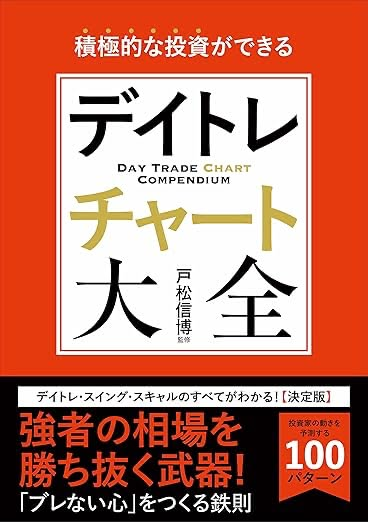
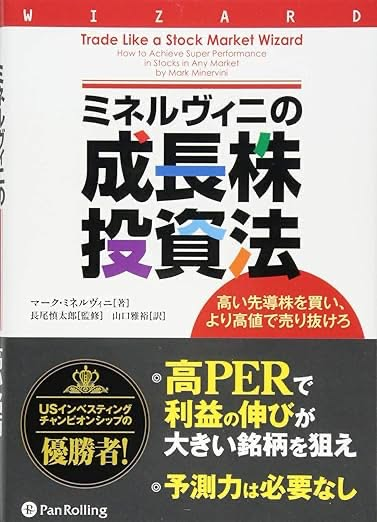
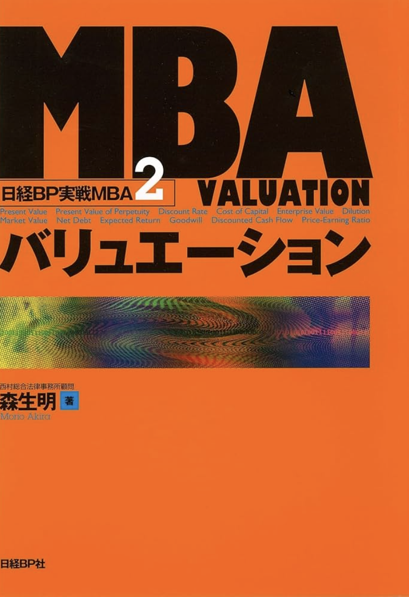
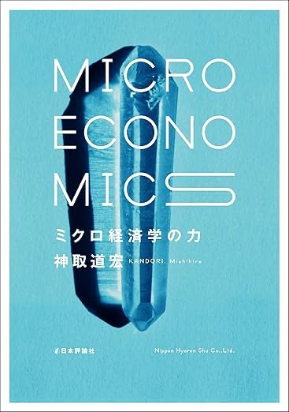
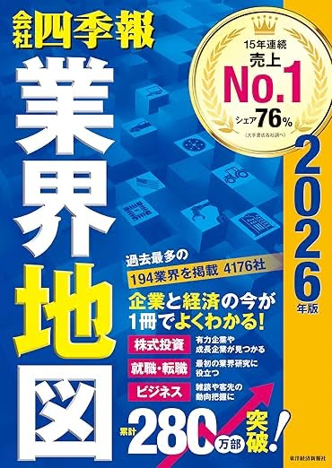
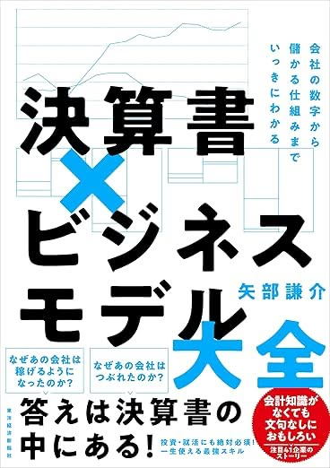
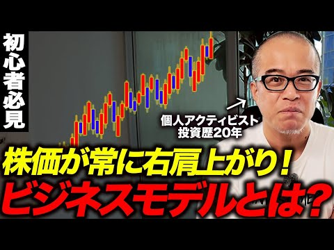
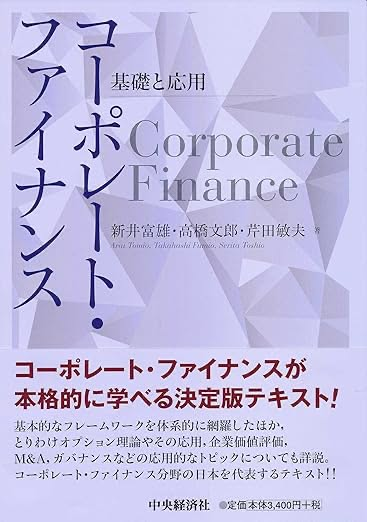
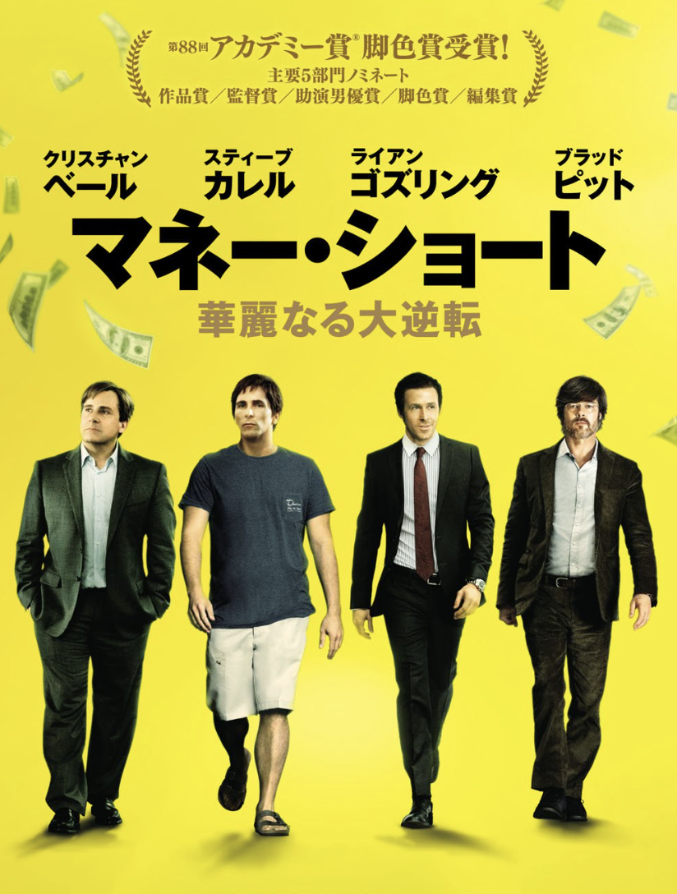

Education
株ってなに？
① 株とは何か？ ー 所有権という本質
まず、「株」が一体何なのかを理解しましょう。
株を買うということは、会社の一部を所有するということです。
株式＝会社の所有権
株式とは、会社の所有権を細かく分割したもの。
例：トヨタの株を1株買う＝トヨタ自動車の一部を所有する
株式の誕生：東インド会社の物語
株式の起源は17世紀初頭のオランダ東インド会社に遡ります。当時、アジアとの貿易は莫大な利益を生む一方で、航海には難破や海賊といった巨大なリスクが伴いました。そこで生まれたのが「株式」という仕組み。複数の投資家から資金を集め、リスクを分散。航海が成功すれば利益を分配し、失敗しても損失を分散する。これが、現代の株式会社の原型です。
会社の利益は誰のものか？
「会社の純利益は社長が受け取る」と考えている方も多いかもしれません。しかし、実際には会社の利益は株主のものです。非上場会社であれば社長が株を100%保有していることも多いため、結果的に社長が利益を受け取ります。しかし、上場会社の場合、株主が分散しているため、利益は株主全員に分配されます。
配当：今後生み出される利益
株を保有していれば、その会社が今後生み出す純利益を配当という形で受け取ることができます。株を保有し続ける限り、その会社が存在する限り、配当が出続けると考えることができます。
株価とは何か？
株価とは、今後その会社が生み出す利益の現在価値です。今後生み出す利益が増えそうだと判断されれば株価は上がり、そうでない場合は株価は下がります。
② どうやって儲けるのか？ ー 2つの方法
株の本質を理解したところで、次は「どうやって儲けるのか？」を学びましょう。
株式投資で利益を得る2つの方法：
①キャピタルゲイン（株価の値上がり益） - 株を安く買って高く売ることで得られる利益。
②インカムゲイン（配当金） - 企業が利益の一部を株主に分配する配当金による利益。
③ なぜ株価は動くのか？ ー 市場との差
株価がどのように動くのかを理解することが、投資で成功する鍵です。
ここが最も重要なポイントです。
成長が予想されていれば、すでに織り込み済み
株価がどのように上がるのか？例えば、会社が成長したとしても、その成長が以前から予想されていたものであれば、それはすでに株価に織り込まれています。
具体例：新型iPhoneの発表が決まっている場合、発表日にAppleの株価は上がるでしょうか？答えはNOです。なぜなら、新型iPhoneが出ることは誰もが知っているため、すでに株価に反映されているからです。
市場とのギャップこそが利益
要するに、市場との差が重要です。
「この会社は伸びるから株価が上がります」というだけでは不十分です。
「この会社は市場がそこまで伸びるとは思っていないが、実際には伸びる」
という市場とのギャップが、株価にすべて反映されてきます。
具体例：みんなが「売上10%増」と予想している中、実際には「売上30%増」になる企業を見つける。このギャップが利益になります。
市場とのギャップこそが利益
要するに、市場との差が重要です。
「この会社は伸びるから株価が上がります」というだけでは不十分です。
「この会社は市場がそこまで伸びるとは思っていないが、実際には伸びる」
という市場とのギャップが、株価にすべて反映されてきます。
具体例：みんなが「売上10%増」と予想している中、実際には「売上30%増」になる企業を見つける。このギャップが利益になります。
市場との差分をどう見つけるか？
市場との差分を見つけるためには、事業を他のどの投資家よりも完全に理解し、真相にたどり着くことが必要です。表面的な部分を見るのではなく、本当に何が重要なのかを見極めることが非常に大切になります。
株価予想の二つの手段
株価を予想する手法は大きく2つに分かれます。どちらも重要であり、ヘッジファンドは両方を見ています。
①ファンダメンタルズ分析
会社の未来を予想していくもの
どのような未来を描くかがファンダメンタルズです。企業の財務状況、ビジネスモデル、市場環境などを分析して本質的な価値を見極める手法。
例：「この会社の新製品は市場を席巻するだろう」「この業界は今後10年伸びる」といった未来予測。
T＋ではこちらを主に扱います。
②テクニカル分析
数値的な確率論に基づくもの
過去の株価や出来高の動きから将来の株価を予測する手法。チャートのパターンや指標を使って売買タイミングを判断する。
例：「株価が移動平均線を上抜けたから買い」「RSIが70を超えたから売り」といったテクニカル指標。
短期トレード向き。
もっと詳しく学びたい方へ



企業分析の流れ
なぜこの順番なのか？
企業分析には正しい順番があります。効率的に、かつ見逃しなく投資対象を見つけるためには、外から内へ、広く浅くから狭く深くという流れが重要です。
STEP1: 外部環境の分析 ー 良い土壌を選ぶ
目的：順張りで良い環境を選ぶ
市場全体が伸びていく中で、その市場で伸びていく企業は基本的にその流れに乗ることができます。そのため、基本的には良い環境の上場企業を選びたいです。市場規模、成長率、5フォース（競争環境）などを調査し、企業が成長できる土壌があるかを見極めます。
STEP2: スクリーニング ー 悪い企業を省く
目的：財務指標で機械的に絞り込む
4000社の中から良い企業を見つけたいのですが、逆に悪い企業をスクリーニングすることで省くことができます。スクリーニングとは、様々な株価指標（PER、PBR、ROEなど）を見ていくことです。
STEP3: 内部環境の分析 ー 企業の本質を見抜く
目的：ビジネスモデルと収益構造を深掘りする
企業のビジネスモデルを見ていきます。上流、競合、下流といった形で、一体誰からお金をもらって誰に売っているのかというビジネスモデルをしっかり理解することが重要です。
収益構造を深く分析する
次に、収益構造を深く分析します。例えば、この会社が成長していくとなったとしても、売上が成長していくのか、それとも売上原価が下がったり、販管費が下がっていくのか、という点です。純利益は株価に非常にダイレクトに影響しますが、その純利益が何がきっかけで、どの収益構造が変わって伸びるのかを見ていきたいです。
良いマクロトレンドの中で一番良い企業を見つける
外部環境の分析をした後、その外部環境の中でもさらにどの企業が強いか、良いマクロトレンドの中でどの企業が一番良いのかを見ていきたいです。
STEP4: イベントドリブン ー タイミングを見極める
目的：短期的な株価変動の機会を捉える
企業の特定のイベントを契機とした投資機会を捉えます。M&A、TOB、MBO、粉飾決算の見極め、政治イベント、金利動向など、様々なイベントドリブンな要素を見ていくことが重要です。
企業分析詳細編①外部環境分析編
市場全体の動きや業界構造を理解することで、企業を取り巻く外部環境を分析します。
順張りの考え方
投資には「順張り」と「逆張り」があります。
順張り：市場全体が伸びている中で、その流れに乗る企業に投資する
逆張り：市場が低迷している中で、割安な企業を見つけて投資する
T＋では基本的に順張りを推奨します。なぜなら、順張りで成功する確率が逆張りで成功する確率よりも圧倒的に高いからです。
マクロトレンドの例
国策による成長
例：政府が「再生可能エネルギー推進」を掲げた場合、太陽光発電関連企業が一気に成長する可能性があります。
法律整備による成長
例：トンネル点検が義務化された結果、トンネル点検車を作る企業の需要が急増しました。
競合の撤退による成長
例：大手企業が不採算事業から撤退した結果、中堅企業がシェアを一気に拡大するケースがあります。
5フォース分析：業界の魅力度を測る
5フォース分析とは、マイケル・ポーターが提唱した業界分析のフレームワークです。
業界の競争環境を5つの要素で分析します。
①新規参入の脅威
新しい企業が簡単に参入できる業界か？
参入障壁が低いと競争が激化し、利益率が下がります。
②代替品の脅威
別の製品やサービスに置き換えられる可能性はあるか？
代替品が多いと価格競争に陥りやすい。
③買い手の交渉力
顧客が価格交渉で強い立場にあるか？
顧客の交渉力が強いと利益率が下がります。
④売り手の交渉力
仕入先が価格交渉で強い立場にあるか？
仕入先の交渉力が強いとコストが上がります。
⑤既存競合の強さ
業界内の競争は激しいか？
競合が多く強いと利益率が下がります。
もっと詳しく学びたい方へ


企業分析詳細編②スクリーニング編
4000社の中から良い企業を見つけたいのですが、
逆に悪い企業をスクリーニングすることで省くことができます。
財務指標によるスクリーニング
スクリーニングとは、様々な株価指標を使って機械的に銘柄を絞り込むことです。
重要：100%信じられる指標は存在しない
これから学ぶPER、PBR、ROEは投資判断に非常に有用な指標ですが、「この指標さえ見れば完璧」という魔法の指標は存在しません。
重要なのは、各指標の構造を理解し、ケースバイケースで使い分けることです。業界、成長段階、ビジネスモデルによって、同じ数値でも意味がまったく変わります。
指標は「道具」です。道具の特性を知らずに使えば、誤った結論に至ります。このセクションでは、各指標の「構造」と「限界」を深く理解していきます。
PER（株価収益率）：最もポピュラーだが最も誤解されやすい指標
PERとは何か？
PER = 株価 ÷ 1株あたり純利益（EPS）
または、PER = 時価総額純利益
PERは「今の株価が、年間利益の何倍で取引されているか」を示す指標です。
例えば、PER15倍なら「今の利益水準が続けば、15年で投資額を回収できる」という意味になります。
株価の構造を理解する
株価は次の式で決まります：
株価 = 1株あたり利益（EPS） × マルチプル（PER）
つまり、株価が上がるには2つの方法があります：
- ①EPSが増える：企業が成長して利益が増える
- ②マルチプルが上がる：市場の評価が高まる（金利低下、期待の高まりなど）
最も株価が上がるのは、①と②が同時に起こるときです。例えば、EPSが2倍になり、PERも20倍から40倍に上がれば、株価は4倍になります。これが成長株投資の醍醐味です。
株価の絶対値だけで割安と判断できるか？
「トヨタの株価は5000円、日産の株価は3000円だから、日産の方が安い」
このような判断は間違いです。なぜなら、株価の絶対値（そのままの価格）には意味がないからです。
具体例：トヨタと日産を比較してみよう
2024年時点のデータ（仮定）：
- トヨタ：時価総額50兆円、純利益5兆円 → PER = 10倍
- 日産：時価総額3兆円、純利益1000億円 → PER = 30倍
「トヨタの方が利益が50倍多いのに、株価（時価総額）は16倍しか違わない。なぜ？」
答え：PERが違うからです。
PERの方が割安さが分かりやすい
日産の方がPERが高い（30倍）＝市場が高い成長を期待している。
トヨタの方がPERが低い（10倍）＝成長余地が少ないか、割安と見られている。
結論：株価の絶対値ではなく、時価総額と利益の関係（PER）を見ないと、割安・割高は判断できません。
PERの基本的な見方
- PERが低い：利益に対して株価が安い → 割安？
- PERが高い：利益に対して株価が高い → 割高？
しかし、この単純な見方が最大の落とし穴です。
PERの落とし穴①：成長率を無視している
PER50倍の企業Aと、PER10倍の企業B。どちらが魅力的でしょうか？
答え：わからない。成長率を見ないと判断できません。
- 企業A：毎年利益が50%成長している急成長企業 → PER50倍は妥当かもしれない
- 企業B：利益が毎年10%減少している衰退企業 → PER10倍でも割高かもしれない
投資家は「将来の利益」を見て株を買います。今の利益が少なくても、将来大きく成長するなら高いPERを正当化できます。逆に、今の利益が多くても、将来減少するなら低いPERでも割高です。
PERの落とし穴②：業界による違いを無視している
業界によって「正常なPER」は大きく異なります。なぜなら、業績の安定性と成長性が業界ごとに違うからです。
わかりやすい例：歯磨きチューブ vs シャンパン
考えてみてください。景気が悪くなったとき、あなたは何を買うのをやめますか？
- 歯磨きチューブ：景気が悪くても、毎日歯を磨きます。消費量はほとんど変わりません。
- シャンパン：景気が悪くなったら、高級シャンパンは買わなくなります。お祝いの機会も減ります。
逆に、景気が良くなったとき：
- 歯磨きチューブ：景気が良くても、2倍の量を使ったりしません。消費量は変わりません。
- シャンパン：景気が良くなると、パーティーが増え、高級シャンパンがたくさん売れます。
これが「価格弾力性」の違いです
経済学では、これを価格弾力性と呼びます。
- 価格弾力性が低い（非弾力的）：歯磨きチューブのように、景気や価格が変わっても需要があまり変わらない商品
- 価格弾力性が高い（弾力的）：シャンパンのように、景気や価格が変わると需要が大きく変動する商品
価格弾力性が低い商品を扱う企業は、業績が安定しやすいため、投資家は高いPERでも買います。
逆に、価格弾力性が高い商品を扱う企業は、業績が不安定なため、投資家はリスクを織り込んで低いPERでないと買いません。
結果：
- 歯磨きメーカー（P&G、ライオンなど）：業績が安定 → 投資家は安心 → PERは高めでも買われる → ディフェンシブ銘柄
- 高級ブランド（LVMH、シャンパンなど）：業績が景気に連動 → 投資家はリスクを感じる → PERは低めにならないと買われない → 景気敏感株（シクリカル株）
このように、同じ業績でも、業績の安定性によってPERは変わるのです。
ディフェンシブ銘柄（生活必需品）
PER20〜30倍が「普通」
例：P&G、ライオン、花王、ユニチャーム
業績が安定しているため、高PERでも買われる。
成長産業（IT、バイオなど）
PER30〜50倍が「普通」
例：メルカリ、ZozoTown、サイバーエージェント
将来の高成長を織り込んでいるため、PERは高い。
成熟産業（銀行、商社など）
PER8〜15倍が「普通」
例：三菱UFJ、三井物産
成長余地が限られているため、PERは低い。
景気敏感株（鉄鋼、海運など）
PER5〜15倍が「普通」
例：日本製鉄、日本郵船
業績が景気に大きく左右されるため、PERは低め。
結論：PERは絶対値では判断できない。同業他社や業界平均と比較して、初めて意味を持つ。
PERの落とし穴③：一時的な利益の増減に影響される
PERは「今期の純利益」を使って計算されるため、一時的な要因で大きく変動します。
- 不動産売却益が発生 → 純利益が急増 → PERが急低下 → 「割安！」に見えるが、翌年は元に戻る
- 一時的な赤字が発生 → 純利益がマイナス → PERが計算できない、または異常に高くなる
- 減損損失を計上 → 純利益が急減 → PERが急上昇 → 「割高！」に見えるが、翌年は元に戻る
対策：過去3〜5年の平均利益を使う、または特別損益を除外した「調整後PER」を計算する。
PERの落とし穴④：赤字企業には使えない
赤字企業の場合、PERはマイナスまたは計算不能になります。
赤字のスタートアップ企業や、一時的に赤字の企業を評価する際、PERは役に立ちません。
このような企業は、PSR（株価売上高倍率）やEV/売上高などの別の指標を使う必要があります。
PEGレシオ：成長率を考慮したPER
PERの最大の欠点「成長率を無視している」を補う指標がPEGレシオです。
PEGレシオ = PER ÷ 成長率（%）
例：PER30倍、成長率30% → PEGレシオ = 1.0
- PEGレシオ < 1.0：成長率に対してPERが低い → 割安の可能性
- PEGレシオ = 1.0〜2.0：成長率に見合ったPER → 適正水準
- PEGレシオ > 2.0：成長率に対してPERが高い → 割高の可能性
PEGレシオ1.0を下回る銘柄は、成長性を考慮すると割安と判断できます。ただし、これも絶対的な基準ではありません。成長の持続性や業界の状況も考慮する必要があります。
具体例で理解するPEGレシオ
①弁護士ドットコム（仮定データ）
- PER：50倍
- 利益成長率：20%
- PEGレシオ：50 ÷ 20 = 2.5
判断：PEGレシオが2.0を超えているため、割高の可能性。利益が20%しか伸びていないのに、PERが50倍というのは過大評価かもしれません。もし決算で利益成長が20%にとどまれば、「期待外れ」として株価が下がる（がっかり売り）リスクがあります。
②インフォリッチ（仮定データ）
- PER：26.8倍
- 利益成長率：30%
- PEGレシオ：26.8 ÷ 30 = 0.89
判断：PEGレシオが1.0を下回っているため、割安の可能性。30%も利益が伸びているのに、PERが26倍程度なら、成長性を考えると割安と言えます。
③タイミー（仮定データ）
- PER：32倍
- 利益成長率：40%
- PEGレシオ：32 ÷ 40 = 0.8
判断：PEGレシオが1.0を大きく下回っているため、割安。40%も利益が伸びているなら、PER32倍は妥当、むしろ安い可能性があります。
④SBI証券（仮定データ）
- PER：20倍
- 利益成長率：24%
- PEGレシオ：20 ÷ 24 = 0.83
判断：PEGレシオが1.0を下回っているため、割安の可能性。金融株としてはPER20倍は平均的ですが、利益が24%も伸びているなら魅力的です。
高PER株のリスク：がっかり売りの恐怖
PER50倍のような高PER株は、常に100点満点を取り続けないといけない優等生です。
問題は何か？
例えば、PER50倍の株は「利益が毎年50%成長する」という期待を織り込んでいます（PEGレシオ1.0の場合）。ところが、決算で利益成長が40%だったとしましょう。
- 素人の反応：「利益が40%も増えてる！素晴らしい決算だ！」
- プロの反応：「50%成長を期待してたのに40%しか伸びてない。がっかりだ、売ろう」
結果、良い決算なのに株価が下がるという現象が起きます。これが「がっかり売り」です。
高PER株は、少しでも期待を下回ると大きく売られます。常に学年トップだった優等生が、一度でも2位になると「あれ、こいつ大したことないな」と評価が急落するようなものです。
初心者へのアドバイス：PER50倍以上の株は、決算リスクが高いため、長期保有には向きません。決算発表の前後で大きく動くため、短期売買向きです。
PERの正しい使い方
①同業他社と比較する
絶対値ではなく、同じ業界の企業と比較する。トヨタのPERをソフトバンクと比較しても意味がない。
②過去のPERと比較する
その企業の過去5年のPER推移を見て、「今は過去と比べて高いか低いか」を判断する。
③成長率と組み合わせる
PEGレシオを計算し、成長性を考慮した評価をする。高PERでも高成長なら正当化される。
④他の指標と組み合わせる
PERだけで判断せず、PBR、ROE、配当利回りなど複数の指標を総合的に見る。
成長株投資の醍醐味：EPS成長とマルチプル拡大のダブル効果
株価が大きく上がるには、2つの要因があります：
- ①EPS（1株あたり利益）の成長
- ②マルチプル（PER）の拡大
そして、最も株価が上がるのは、①と②が同時に起こるときです。
具体例：3年で10倍になる株（テンバガー）
ある中小型成長株を想定します：
- 当初：EPS100円、PER10倍 → 株価1000円
- 3年後：EPS300円（3倍に成長）、PER30倍（市場の評価が高まる）→ 株価9000円
3年で9倍になりました！内訳は：
- EPS成長：3倍
- マルチプル拡大：3倍（10倍 → 30倍）
- 合計：3倍 × 3倍 = 9倍
なぜマルチプルが拡大するのか？
利益が3年連続で高成長していると、市場は「この会社はすごい！今後も成長し続けるだろう」と評価を変えます。
- 当初は無名で誰も注目していなかった → PER10倍
- 3年連続で高成長を達成 → 注目度が上がる → PER30倍でも買われる
これが成長株投資の醍醐味です。「利益が3倍になるなら株価も3倍」ではなく、「利益が3倍になり、評価も3倍になるから、株価は9倍」になるのです。
現実的な数字で考えると？
3年でEPSを3倍にするには、年間成長率は約44%必要です。現実的には難しいですが、年間30%成長でも：
- 3年後のEPS：100円 × 1.3 × 1.3 × 1.3 = 219円（約2.2倍）
- PERが10倍 → 20倍に拡大
- 株価：219円 × 20倍 = 4380円（約4.4倍）
3年で4倍になります。年率換算で約63%のリターンです。これがうまくいけば、インデックスファンド（年率約8%）を大きく上回ります。
注意点：逆も起こる
逆に、成長が鈍化すると：
- EPSが期待より伸びない → ①の効果が小さい
- 市場が失望してPERが低下 → ②が逆方向に働く
- 結果：株価が大幅に下落
これが「がっかり売り」の恐怖です。高PER株は、成長が続けば大きなリターンを生みますが、成長が鈍化すると一気に下落します。ハイリスク・ハイリターンです。
決算をまたぐべきか？株価から予測する方法
決算発表の直前、「決算をまたぐべきか（そのまま保有するか）、それとも決算前に売るべきか」は、投資家の永遠の悩みです。
1つの判断基準：株価の動きを見る
決算発表の数日前から、株価がどう動いているかを観察します。
- 決算前にスルスル上がっている：市場が「良い決算が出る」と期待している。すでに織り込まれている可能性が高い → 決算でサプライズがないと「がっかり売り」のリスク
- 決算前に横ばい or 下落：市場が期待していない。良い決算が出れば株価が跳ねる可能性 → 決算をまたぐメリットあり
プロの投資家の考え方：
「決算前に株価がめちゃくちゃ上がっているなら、もう期待は織り込まれている。期待通りの決算では株価は上がらない。むしろ、ここで売っておこう（おめでたい人に売っておこう）」
逆に、「決算前に株価が低迷しているなら、期待が低い。良い決算が出れば大きく跳ねる可能性がある。決算をまたいでみよう」
結論：決算前に株価が大きく上がっている場合、一旦利益確定（半分売る、全部売るなど）を検討する価値があります。決算後に下がったら買い直せばいいのです。
PBR（株価純資産倍率）：資産価値から見た割安・割高
PBRとは何か？
PBR = 株価 ÷ 1株あたり純資産（BPS）
または、PBR = 時価総額 ÷ 純資産
PBRは「今の株価が、会社の純資産（自己資本）の何倍で取引されているか」を示す指標です。
PBR1倍なら、「会社を解散して資産を全部売却したときの価値」とちょうど同じ株価ということになります。
PBRの基本的な見方
- PBR < 1倍：純資産より株価が安い → 解散価値より安い → 割安？
- PBR > 1倍：純資産より株価が高い → 解散価値より高い → 割高？
しかし、この単純な見方も大きな誤解を生みます。
PBRの落とし穴①：「PBR1倍割れ = 割安」の誤解
PBR1倍割れの株を見て「解散価値より安いから割安だ！」と飛びつくのは危険です。
なぜPBR1倍を割るのか？
- ROEが低い：稼ぐ力が弱く、純資産を有効活用できていない
- 資産価値が毀損している：帳簿上は資産があるが、実際には価値がない（不良在庫、回収不能な売掛金など）
- 将来性がない：業界が衰退しており、今後も利益が出る見込みがない
- 経営が悪い：経営陣が無能で、資本を無駄遣いしている
結論：PBR1倍割れは「市場がその会社に期待していない」というシグナル。割安ではなく、「安いなりの理由がある」。
PBRの落とし穴②：業界による違いを無視している
製造業・金融業
PBR0.5〜1.5倍が「普通」
多額の有形資産（工場、土地など）を持つため、PBRは低め。PBR1倍割れも珍しくない。
IT・サービス業
PBR3〜10倍が「普通」
有形資産が少なく、人材や技術などの無形資産が価値の源泉。高PBRでも正当化される。
不動産業
PBR0.8〜1.2倍が「普通」
保有不動産の含み益があるため、PBR1倍前後が適正水準とされる。
PBRの落とし穴③：無形資産を反映しない
PBRは「貸借対照表（BS）の純資産」を使って計算されますが、BSには多くの重要な資産が計上されていません。
- ブランド価値：コカ・コーラやAppleのブランドは計上されない
- 人材：優秀な従業員の価値は計上されない
- 技術力・ノウハウ：自社開発の技術は計上されない（買収した技術は「のれん」として計上される）
- 顧客基盤：既存顧客との関係性は計上されない
IT企業やサービス業のように、無形資産が価値の中心である企業は、PBRが高くなるのが当然です。
東証のPBR改革：1倍割れ企業への要請
2023年、東京証券取引所はPBR1倍割れの上場企業に対し、「資本コストを上回るROEを実現し、PBRを1倍以上に改善するよう」要請しました。
これは、「PBR1倍割れ = 投資家から評価されていない = 資本を有効活用できていない」という問題意識からです。
企業側の対応例：
- 自社株買いで1株あたり純資産を増やす
- 不採算事業を整理してROEを改善する
- 配当を増やして株主還元を強化する
この改革により、PBR1倍割れ企業が減少し、株価が上昇する企業も増えています。
PBRとROEの関係
PBRとROEには密接な関係があります。
理論的には、PBR = ROE × PER
つまり、ROEが高い企業ほど、PBRも高くなる傾向があります。
- ROEが高い（15%以上）→ 資本を効率よく使って稼いでいる → PBRが高くても正当化される
- ROEが低い（5%以下）→ 資本を有効活用できていない → PBRは1倍割れになりやすい
「PBR1倍割れで割安だ！」と思っても、ROEが3%しかなければ、それは「割安」ではなく「稼げない会社だから安い」だけです。
PBRの正しい使い方
①ROEと組み合わせる
PBR単体ではなく、ROEと組み合わせて見る。高ROE×低PBR = 真の割安。低ROE×低PBR = 稼げないから安い。
②業界平均と比較する
同業他社のPBRと比較する。製造業とIT業では基準が全く違う。
③解散価値を意識する
PBR0.5倍などの極端に低い企業は、買収や解散のリスクがある。一方で、経営改善の余地も大きい。
④無形資産の重要性を考える
IT企業やブランド企業は、無形資産が主な価値。高PBRでも割安なケースがある。
ROE（自己資本利益率）：経営の効率性を測る
ROEとは何か？
ROE（Return on Equity） = 純利益 ÷ 自己資本（純資産）× 100（%）
ROEは「株主が出資したお金（自己資本）を使って、どれだけ効率よく利益を生み出しているか」を示す指標です。
例えば、ROE15%なら「100億円の自己資本で、15億円の純利益を生み出している」ということです。
わかりやすい例：滝本レンタカー
中山さんがレンタカー会社を始めました。
- 自己資本（出資金）：500万円
- 借入金：500万円（金融公庫から借入）
- 合計資金：1000万円
この1000万円で、200万円のレンタカーを5台購入しました。1年間営業した結果：
- 売上：1000万円
- 純利益：50万円
この会社のROEは？
ROE = 50万円（純利益）÷ 500万円（自己資本）= 10%
500万円出資して、1年後に50万円の利益が出ました。ROE10%です。
重要なポイント：借入金500万円は「自己資本」ではないので、ROEの計算には入りません。ROEは株主の出資金に対する利益率です。
なぜROE8%が基準なのか？
ROE8%という数字がよく基準として使われますが、なぜでしょうか？
答え：インデックスファンド（S&P500など）の長期平均リターンが約8%だからです。
投資家の視点で考えてみましょう：
- 選択肢A：インデックスファンドを買う → 年間約8%のリターンが期待できる
- 選択肢B：ある企業の株を買う → ROEが5%しかない
どちらが魅力的ですか？選択肢Aですよね。わざわざリスクを取って個別株を買うのに、インデックスファンド以下のリターンしか得られないなら、意味がありません。
結論：ROE8%は「最低限これくらいないと、インデックスファンドに勝てない」という基準です。米国企業では「ROE15%以上」が投資対象の目安とされます。
結果、少ない資本で安定した利益を生む＝ROE13%が実現しています。
対比：すべて直営店だったら？
- 全店舗の土地・建物・設備を自己資本で用意 → 自己資本が膨大に増える
- 同じ利益でも、分母が大きくなるため、ROEは大幅に低下する（おそらく3〜5%程度）
教訓：FCモデルは、店舗ビジネスでもROEを高く保つ有効な戦略です。セブンイレブン、マクドナルドなども同様の理由でROEが高めです。
デュポン分析：ROEを分解して本質を理解する
ROEは3つの要素に分解できます。これをデュポン分析といいます。
ROE = 売上高純利益率 × 総資産回転率 × 財務レバレッジ
つまり、
ROE = 純利益売上 × 売上総資産 × 総資産自己資本
- 売上高純利益率：売上からどれだけ利益を残せるか（収益性）
- 総資産回転率：資産をどれだけ効率的に使って売上を生むか（効率性）
- 財務レバレッジ：借金をどれだけ使っているか（リスク）
同じROE15%でも、3つの要素のバランスが違えば、企業の質は全く異なります。
パターン①：高収益性型
利益率10% × 回転率1.0 × レバレッジ1.5 = ROE15%
例：高級ブランド企業。高い利益率で稼ぐ。健全で持続可能。
パターン②：高効率型
利益率5% × 回転率2.0 × レバレッジ1.5 = ROE15%
例：小売業。薄利多売で回転率を上げる。Amazon型。
パターン③：高レバレッジ型
利益率5% × 回転率1.0 × レバレッジ3.0 = ROE15%
例：借金を多用して稼ぐ。不況時にリスク大。要注意。
デュポン分析をすることで、「どうやってROEを高めているのか」が見えてきます。健全な高ROEと、リスクの高い高ROEを見分けることができます。
ROEの正しい使い方
①デュポン分析をする
ROEを3要素に分解して、どこで稼いでいるのかを理解する。レバレッジで無理に高めていないか確認。
②自己資本比率と組み合わせる
高ROE×高自己資本比率 = 理想的。高ROE×低自己資本比率 = 要注意。
③過去の推移を見る
ROEが改善傾向か、悪化傾向かを見る。一時的な高ROEに騙されない。
④成長余地と組み合わせる
高ROEでも成長余地がなければ魅力的ではない。成長余地×高ROE = 最強の組み合わせ。
企業がROEを改善する方法：アクティビスト投資家の視点
アクティビスト投資家とは、株式を大量に取得し、経営陣に改善を要求する投資家です。彼らが最も重視するのがROEです。
ROEを改善する方法は、大きく2つあります：
①利益を増やす（分子を大きくする）
- 売上を増やす：新製品開発、市場開拓、M&Aなど
- コストを削減する：人員削減、工場閉鎖、不採算事業の撤退など
- 利益率を改善する：価格を上げる、高付加価値製品にシフトするなど
これらは事業改善であり、時間がかかりますが、本質的なROE改善につながります。
②自己資本を減らす（分母を小さくする）
- 自社株買い：市場から自社株を買い戻し、消却する → 自己資本が減少 → ROE上昇
- 特別配当：余剰資金を株主に還元 → 自己資本が減少 → ROE上昇
- 借入を増やす：銀行から借りて自社株買いや配当に回す → 自己資本比率は下がるがROEは上昇
これらは財務操作であり、短期間で実行できますが、事業の実力は変わっていません。
アクティビスト投資家の典型的な要求：
「御社は利益が3兆円も出ているのに、自己資本が30兆円もある。ROEが10%しかない。余剰資金を特別配当として株主に還元し、足りない分は銀行から借りるべきだ。そうすれば、自己資本が15兆円に減り、ROEが20%になる。株主還元も強化できる。」
賛否両論
賛成派（主に外国人投資家）：「余剰資金を遊ばせておくのは無駄。株主に還元すべき。ROE改善は株主利益の最大化だ。」
反対派（主に日本企業）：「余剰資金は、リーマンショックのような危機に備えるため。借金を増やしてROEを高めるのは、短期的な株主利益の追求であり、長期的な企業価値を損なう。」
あなたはどう思いますか？正解はありません。ただし、投資家としてROEを見る際、「どうやってROEを高めているのか」を理解することが重要です。
3つの指標を組み合わせる：PER × PBR × ROEの関係
PER、PBR、ROEは、それぞれ独立した指標ではなく、密接に関連しています。
指標の関係式
PBR = PER × ROE
この式から、以下のことがわかります：
- ROEが高い企業は、PBRも高くなる傾向がある
- 同じPERでも、ROEが高い企業の方がPBRは高くなる
- PBRが低いのは、ROEが低いか、PERが低いか、あるいは両方
なぜこの式が成り立つのか？ 数学的に証明してみよう
まず、各指標の定義を確認：
- PER = 株価 ÷ EPS（1株あたり利益）
- PBR = 株価 ÷ BPS（1株あたり純資産）
- ROE = EPS ÷ BPS × 100（%）
ここで、ROEの式を変形します：
ROE = EPS ÷ BPS
つまり、EPS = ROE × BPS
これをPERの式に代入します：
PER = 株価 ÷ EPS = 株価 ÷ (ROE × BPS)
ここで、PBR = 株価 ÷ BPS なので、
PBR = PER × ROE
これで証明完了です！この式は常に数学的に成り立ちます。
この式から何がわかるか？
例①：ROEが高い企業はPBRも高くなる
- 企業A：PER15倍、ROE10% → PBR = 15 × 0.1 = 1.5倍
- 企業B：PER15倍、ROE20% → PBR = 15 × 0.2 = 3.0倍
同じPERでも、ROEが高い企業Bの方がPBRは2倍になります。
例②：PBR1倍割れの理由
- 企業C：PER10倍、ROE5% → PBR = 10 × 0.05 = 0.5倍
ROEが低いため、PBRが1倍を割り込んでいます。これは「ROEが低い＝稼ぐ力が弱い」ため、市場が低く評価しているということです。
例③：PBRを改善するには？
東証が「PBR1倍以上を目指せ」と言った時、企業が取れる対策は2つ：
- ①ROEを上げる：事業効率を改善し、利益を増やす
- ②PERを上げる：市場の期待を高める（成長戦略を示す、IR活動を強化する）
根本的な解決は①ROEを上げることです。PERは市場が決めるものなので、企業が直接コントロールできません。
理想的な銘柄
高ROE × 低PER × 低PBR
稼ぐ力が強いのに、市場から過小評価されている。真の割安株。滅多に見つからない。
成長株
高ROE × 高PER × 高PBR
稼ぐ力が強く、市場も高く評価している。割高に見えても、成長が続けば正当化される。
バリュー株
低ROE × 低PER × 低PBR
稼ぐ力が弱く、市場も低く評価している。経営改善の余地があれば、将来化ける可能性も。
割高株（要注意）
低ROE × 高PER × 高PBR
稼ぐ力が弱いのに、市場が過大評価している。期待が外れれば株価暴落のリスク大。
まとめ：指標は「道具」であり、万能ではない
100%信じられる指標は存在しない
PER、PBR、ROEのどれも、完璧な指標ではありません。それぞれに限界があり、誤解を招く罠があります。
- PER：成長率を無視する、業界差を無視する、一時的な利益変動に弱い
- PBR：無形資産を反映しない、ROEが低いと意味がない、業界差が大きい
- ROE：借金で膨らませられる、成長余地を考慮しない、分解しないと本質が見えない
重要なのは、各指標の「構造」と「限界」を理解することです。
ケースバイケースで使い分ける
同じ指標でも、業界、成長段階、ビジネスモデルによって意味が変わります。
- 成長株：PERが高くても成長率が高ければOK。PEGレシオで判断。
- バリュー株：PBRとROEを組み合わせて、真の割安かを見極める。
- 配当株：配当利回りと配当性向も合わせて見る。
- 赤字企業：PERは使えない。PSRやEV/売上高を使う。
「この指標が○○だから買い！」という単純な判断は危険です。
複数の指標を組み合わせる
1つの指標だけで判断せず、複数の指標を総合的に見ることが重要です。
- PERが低い → でもROEも低い → 割安ではなく、稼げないから安い
- PBRが低い → でも自己資本比率も低い → 借金まみれで危険
- ROEが高い → でもレバレッジが高い → 借金で無理に高めている
指標を「点」で見るのではなく、「線」で見る。企業全体のストーリーを理解する。
指標の本質：「なぜそうなっているのか？」を理解する
指標は結果です。重要なのは、「なぜその数値になっているのか？」を理解することです。
- PERが高い → なぜ？ → 将来の高成長が期待されている
- PBRが低い → なぜ？ → ROEが低く、資本を有効活用できていない
- ROEが改善している → なぜ？ → 新製品がヒットした？自社株買いをした？
指標の裏側にあるビジネスの実態を理解することが、投資で成功する鍵です。
指標は「道具」です。道具の使い方を知らずに使えば、怪我をします。
このセクションで学んだ「構造」と「限界」を理解し、賢く使いこなしましょう。
もっと詳しく学びたい方へ
企業分析詳細編③内部環境分析編
企業のビジネスモデル、競争優位性、収益構造を深く分析します。
財務3表の基本：PL・BS・CSとは？
そもそも財務諸表って何？
財務諸表とは、企業の経営状態を数字で表した報告書です。上場企業はすべて財務諸表を公開する義務があります。
なぜ公開するのか？
株主や投資家を守るためです。企業がどれだけ儲けているのか、財務状況は健全か、お金の流れはどうかを透明にすることで、投資家が正しい判断をできるようにしています。
上場していない企業は公開義務がありませんが、上場企業は四半期ごとに必ず公開します。
企業の実態を理解するには、3つの財務諸表を読む必要があります。
- PL（損益計算書）：1年間でいくら儲けたか？稼ぐ力を見る
- BS（貸借対照表）：今どれだけの資産・負債があるか？財務の健全性を見る
- CS（キャッシュフロー計算書）：実際にお金が増えたか減ったか？お金の流れを見る
重要：この3つは独立しているのではなく、繋がっています。
PLで利益が出れば、BSの純資産が増える。
PLで利益が出ても、CSで営業CFがマイナスなら「儲かっているのにお金がない」状態。
財務3表を一体で見ることで、企業の本当の姿が見えてきます。
ビジネスモデルの理解：誰からお金をもらっているのか？
ビジネスモデルとは、「誰に・何を・どうやって売るか」の全体像です。
上流（仕入先）→ 自社 → 下流（顧客）という流れで理解します。
ビジネスモデルの具体例
トヨタ自動車
上流：部品メーカー（デンソー、アイシンなど）
自社：自動車の組み立て
下流：ディーラー経由で一般消費者
儲けのポイント：大量生産によるコスト削減、ブランド力
Amazon
上流：出品者（個人・企業）
自社：ECプラットフォーム
下流：一般消費者
儲けのポイント：手数料収入、物流インフラ、データ活用
上流：広告主（企業）
自社：検索エンジン・広告プラットフォーム
下流：一般ユーザー（無料）
儲けのポイント：広告収入、ユーザーデータ
収益構造の深掘り：どこで儲けているのか？（PL分析）
売上が伸びているだけでは不十分です。どの収益構造が変わって純利益が伸びるのかを見極める必要があります。
売上 - 売上原価 = 売上総利益
売上総利益 - 販管費 = 営業利益
営業利益 ± 営業外損益 = 経常利益
経常利益 ± 特別損益 - 税金 = 純利益
成長の質を見分ける：一口に「成長」と言っても質が違う
企業が成長する方法は大きく分けて3つあります。そして、成長の質には大きな差があります。
- ①売上が伸びる型：市場拡大、新製品ヒット、シェア拡大。
→ 成長は早いが、競合に追随されやすい。 - ②原価が下がる型：量産効果、内製化、仕入れ交渉力の向上。
→ 売上が変わらなくても利益率が大幅改善。持続性が高い。 - ③販管費が下がる型：広告費削減、効率化、固定費削減。
→ 売上が変わらなくても営業利益が大幅改善。
質の良い成長：売上増加と原価削減が同時に起こり、限界利益率が高い状態。
こういう企業は、売上が2倍になると利益が3倍、4倍になることもある。
収益構造の改善パターン
①売上が伸びる
パターンA：数量増加
新製品のヒット、市場拡大、シェア拡大などで販売数量が伸びる。
パターンB：値上げ（価格転嫁）
製品価格を引き上げることで、販売数量が変わらなくても売上が伸びる。ブランド力や独占的地位がある企業ほど値上げしやすい。
注意：売上が伸びても原価率が上がれば利益は増えない。値上げは数量増加より利益率改善効果が高い。
②売上原価が下がる
パターンA：内部要因
量産効果、内製化、仕入れ交渉力の向上、生産効率化などで自社努力によりコストが下がる。
パターンB：原材料価格下落
石油、鉄鉱石、小麦などの原材料市況が下落することで、仕入れコストが下がる。外部環境の恩恵を受ける形で利益率が改善する。
効果：売上が変わらなくても利益率が大幅に改善する。原材料価格下落は一時的だが、内製化などの構造改善は持続性が高い。
③販管費が下がる
広告費削減、効率化、固定費の削減などで販管費が下がる。
効果：売上が変わらなくても営業利益が大幅に改善する。
限界利益率とは？
限界利益率 = (売上 - 変動費) ÷ 売上
限界利益率が高いほど、売上が伸びたときに利益が急激に増えます。ソフトウェア業界は限界利益率が非常に高く（80%以上）、売上が2倍になれば利益は3倍、4倍になることもあります。
競争優位性の源泉
コスト優位性
他社よりも安く作れる。量産効果、内製化、技術力など。
差別化
他社にはない独自の価値。ブランド力、技術力、ネットワーク効果など。
ニッチ戦略
特定の市場に集中する。大手が参入しにくい領域で独占する。
健全性を見る：BS・CS分析
PLで稼ぐ力を見たら、次はBS（貸借対照表）とCS（キャッシュフロー計算書）で健全性を見ます。
どれだけ儲かっていても、倒産する企業はあります。
借金が多すぎたり、お金が回らなくなったり、投資しすぎたり。
BS・CSを見ることで、企業の「安全性」と「持続性」を判断できます。
BS・CSで見るべき指標
自己資本比率（BS）
自己資本 ÷ 総資産
企業の財務安全性を示す指標。
40%以上：安全
20%以下：倒産リスク高
意味：借金に頼らず、自分の資本でどれだけ事業を回しているか。
流動比率（BS）
流動資産 ÷ 流動負債
短期的な支払い能力を示す指標。
120%以上：安全
100%以下：資金繰りに不安
意味：1年以内に返さなければいけない借金を、手元の資産で返せるか。
営業キャッシュフロー（CS）
本業でお金を稼げているか？
PLで利益が出ていても、営業CFがマイナスなら「儲かっているのにお金がない」状態。
在庫が増えたり、売掛金が回収できなかったりすると起こる。
理想：営業CFがプラスで、かつ増加傾向。
フリーキャッシュフロー（CS）
営業CF - 投資CF
投資した後に残るお金。
プラス：自由に使えるお金がある
マイナス：投資が過剰、または稼ぐ力が弱い
理想：フリーCFがプラスで、配当や自社株買いに回せる余裕がある。
財務3表が繋がっている例
例：ある企業が1億円の利益を出した（PL）。
- PLの純利益1億円が、BSの純資産に加算される。
- しかし、売掛金が増えて現金化されていないと、CSの営業CFはマイナスになることもある。
- つまり、「利益は出ているが、手元に現金がない」状態。
このように、3つの財務諸表を一体で見ることで、企業の本当の姿が見えてきます。
減価償却：3表の繋がりを最もよく示す概念
減価償却とは？
建物や機械などの固定資産は、時間とともに価値が減っていきます。
その価値の減少分を、毎年費用として計上する会計処理が「減価償却」です。
例：1億円の機械を買って、10年で償却する場合、
毎年1000万円ずつ減価償却費として費用計上します。
なぜ一気に費用計上しないのか？
もし1億円の機械を買った年に全額費用計上すると、その年だけPLが大赤字になり、翌年以降は費用ゼロになります。
しかし実際には、その機械は10年間使い続けて利益を生み出します。
会計の基本原則：費用と収益の対応
機械が10年間で生み出す収益に対応させて、費用も10年間で分散させる。
これにより、毎年のPLが企業の実態を正しく反映します。
もし一気に費用計上してしまうと、投資家が企業の本当の収益力を判断できなくなるため、減価償却という仕組みが存在します。
減価償却が財務3表に与える影響
PL（損益計算書）
費用として計上される
減価償却費1000万円が費用として引かれ、営業利益が減る。
しかし、実際にお金が出ていくわけではない。
（お金が出たのは機械を買った時）
BS（貸借対照表）
固定資産の簿価が減少する
機械の帳簿上の価値が毎年1000万円ずつ減っていく。
1年目：9000万円
2年目：8000万円
10年目：0円
CS（キャッシュフロー計算書）
営業CFに戻される
減価償却費は「費用だが現金が出ていない」ので、営業CFの計算では利益に加算し直す。
純利益 + 減価償却費 = 営業CF（簡易版）
なぜ減価償却を理解すべきなのか？
減価償却費が大きい企業（製造業、インフラ企業など）は、PLの利益が少なく見えても、実際のキャッシュ創出力は高いことがあります。
具体例：
- PL：営業利益1億円、減価償却費5000万円
- CS：営業CF = 1億円 + 5000万円 = 1億5000万円
→ 利益は1億円だが、実際に手元に残るお金は1億5000万円。
この差を理解していないと、「利益が少ないから割安」と勘違いすることがある。
逆に：減価償却費が少ないソフトウェア企業などは、PLの利益とCSの営業CFがほぼ一致します。
IR取材：企業の生の声を聞く
財務諸表だけでは見えない企業の戦略や経営者の考えを、IR取材を通じて直接聞くことができます。
IR担当者や経営者と対話することで、決算書には載っていない「なぜ？」を深掘りできます。
参考資料：
もっと詳しく学びたい方へ


企業分析詳細編④イベントドリブン編
企業の特定のイベントを契機とした投資機会を捉える手法です。
イベントドリブンとは？
企業に起こる特定のイベントをきっかけに、短期的な株価変動を狙う投資手法です。
ファンダメンタルズ分析が「長期的な企業価値」を見るのに対し、
イベントドリブンは「短期的な株価変動」を狙います。
主なイベントの種類
M&A（合併・買収）
企業が他社を買収すると、買収される側の株価は急騰することが多い。買収する側の株価は下がることも。
例：A社がB社を買収すると発表。B社の株価は買収価格に向かって上昇する。
TOB（株式公開買付）
特定の価格で株を買い取るオファー。TOB価格は通常、市場価格より高く設定される。
例：1株1000円の株に対し、1株1200円でTOBが発表されると、株価は1200円に向かって上昇。
MBO（経営陣による買収）
経営陣が自社の株を買い取って非上場化する。株主にプレミアムが支払われる。
例：創業者が「会社を非上場にしたい」と考え、株主から株を買い取る。
株式分割
1株を複数株に分割することで、株価が下がり流動性が向上。個人投資家が買いやすくなる。
例：1株10,000円の株を1:10に分割すると、1株1,000円になり買いやすくなる。分割発表後に株価が上昇することも。
増配・減配
配当金の増額は好材料、減額は悪材料として株価に影響する。
例：配当を年間100円から150円に増やすと発表すると、配当目当ての投資家が買いを入れ株価が上昇。逆に減配発表は売りを誘う。
指数組入
日経平均やTOPIXなどの指数に新たに組み入れられると、インデックスファンドの買いが入り株価が上昇。
例：東証プライム市場に昇格した企業がTOPIXに組み入れられると、機械的な買いが発生する。
親子上場解消
親会社が子会社株を完全取得して非上場化。子会社株主にプレミアムが支払われる。
例：トヨタが子会社のダイハツを完全子会社化すると発表。ダイハツ株主には市場価格より高い価格で株を買い取る提案がなされる。
株主提案
株主が経営陣に対して提案を行う。配当増額や自社株買い、経営陣の交代などが含まれる。
例：アクティビスト（物言う株主）が「配当性向を50%に引き上げよ」と提案し、実現すれば株価が上昇する。
粉飾決算の見極め方
粉飾決算（会計不正）を見抜くことも重要なスキルです。以下のサインに注意：
- 売上が急増しているのに、キャッシュフローが増えていない
- 売掛金や在庫が異常に増えている
- 営業キャッシュフローがマイナスなのに、利益は黒字
- 監査法人が交代している
もっと詳しく学びたい方へ

まとめ：19の隠れたインサイト
外部環境×内部環境の統合フレームワーク
これまで学んだ「外部環境分析（STEP1）」と「内部環境分析（STEP3）」を統合し、企業の成長パターンを19種類に分類したフレームワークです。
このフレームワークを使うことで、「隠れたインサイト」＝まだ市場が気づいていない企業の本当の強みを体系的に見つけることができます。
横軸：外部環境・ビジネスモデル・経営資源
縦軸：市場拡大・シェア拡大・利益率向上
「隠れたインサイト」を知り、いい銘柄の見逃しを防ぐ
「隠れたインサイト」とは、まだ多くの人が知らないその会社の本当の強みのこと。
「実は○○」と説明できるストーリーです。
19の「隠れたインサイト」
市場の構造的な伸び
外部環境の変化により、市場全体が成長している
成長企業のコバンザメ
成長企業のサプライチェーンに組み込まれている
国策との強いリンク
政府の政策や法整備により追い風を受けている
デカいダメ競合
大手競合が撤退・弱体化し、シェアを奪える
ゲームチェンジ
業界のルールや構造が変わり、新しい勝者が生まれる
成長市場・過当競争市場の武器商人
競争が激しい市場で、プレイヤー全員に道具を売る
ストック化
単発売り切りから継続課金モデルへ転換
構造的な参入障壁
規制・設備投資・ネットワーク効果などで新規参入が困難
資産の負債化
競合の強みが弱みに変わる（大型店舗、在庫など）
業態転換によるバリューチェーン切り上げ
より高付加価値な事業領域へシフト
プラットフォーム化
ネットワーク効果により、勝者総取りの構造を構築
販路の強さ
圧倒的な販売チャネルを持ち、商品をどんどん売れる
コスト優位性
規模の経済・垂直統合・独自技術によりコストで勝つ
巨大市場を創出しうる新技術
イノベーションにより新しい巨大市場を生み出す
有能な経営者
経営者の手腕が企業価値を大きく左右する
商流の中の属人的・地縁的なつながり
人脈やローカルネットワークが参入障壁になる
強烈な営業力
営業組織の強さで競合を圧倒する
特殊技術
他社が簡単に真似できない技術を持つ
ブランド力
強いブランドにより価格競争に巻き込まれない
おすすめの映画
企業分析やビジネスの理解を深めるために、実際の事例を描いた映画を観ることもおすすめです。
エンターテイメントとして楽しみながら、投資家の視点やビジネスの裏側を学べます。
